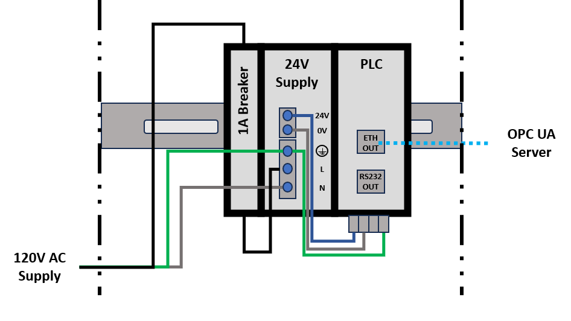
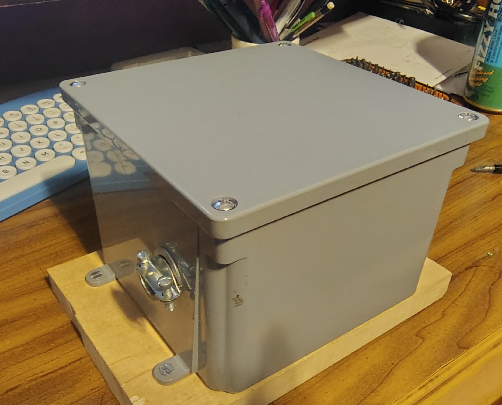
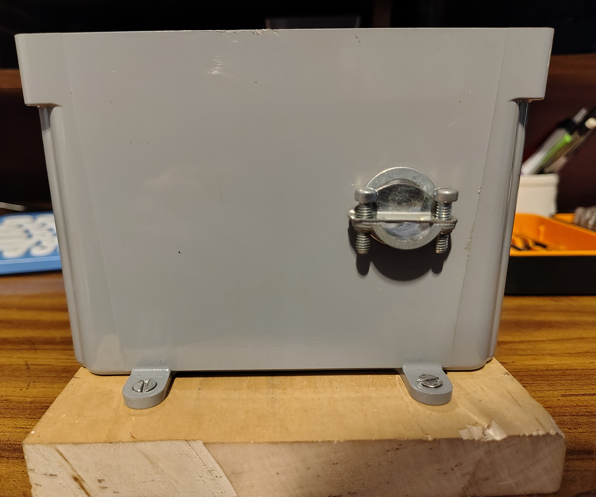
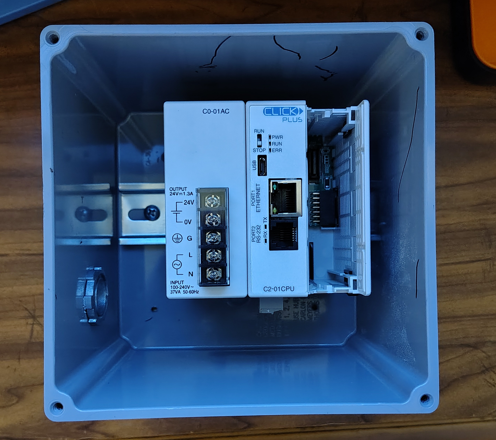

PLC Test Bed
Overview
I have wanted some sort of cheap test PLC system for a while now, and have finally decided to start building. My constraints are that it is cheap, realistic, and safe to leave running. My experience with cheap controllers has been solely Arduino and Raspberry Pi, which are excellent for prototyping electronics, but less useful for practice implementing server-based applications that Industry 4.0 systems require. My plan to start is simple:
- Build a small enclosure to house a power supply and PLC.
- Create a simple program that simulates noisy analog data.
- Connect the PLC to an OPC-UA server.
- Feed the tag information to a python program, where I can build digital twins, run MPC, create dashboards, and other data-sciency things.
I will start with the materials, and then get into how everything is wired together. We will finish with a test run of a simple PLC program.
Materials
I am starting with the following materials.
| Component | Part # | Price (USD) |
|---|---|---|
| Click Plus PLC | C2-01CPU | $110.00 |
| Click 1.3A Power Supply | C0-01AC | $73.00 |
| Eaton Miniature Circuit Breaker 1A | FAZ-D1-1-NA-L-SP | $29.00 |
| DIN rail | DN-R35S1-2 | 9.25 |
| 6x6x4 Junction Box | n/a | $22.99 |
| Power supply cord | n/a | $11.99 |
A rough wiring diagram is shown below. As an aside, typically the enclosure should have about 2" clearance on each side for the controller, which is not the case with the J-box I am using. In general, the J-Box is there to protect the PLC, and keep the wiring behind a barrier when the PLC is running. In the future, I may splurge for a NFPA compliant setup, but for now it's fine if it's a little tight.

The recommended wiring from the manual does not require a breaker, but I liked the option of having a hard off switch when not in use.
Construction
For my own morale, I am posting my progress here, but as of November 22 I am still waiting on a few components. I have a very rinky-dink mount for the jbox that would probably insult any halfway decent carpenter. I've added a few progress pics below, please ignore the junk on my desk:



To be continued!